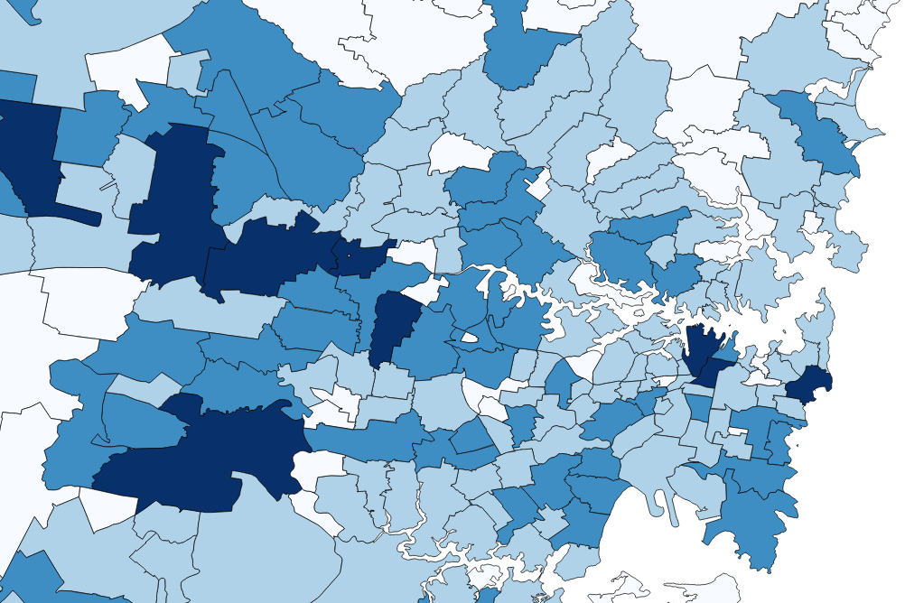
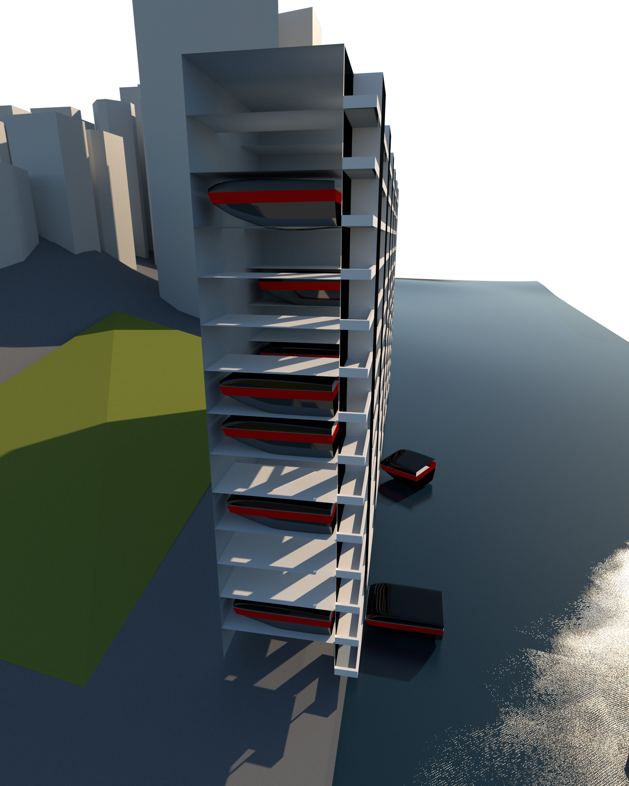
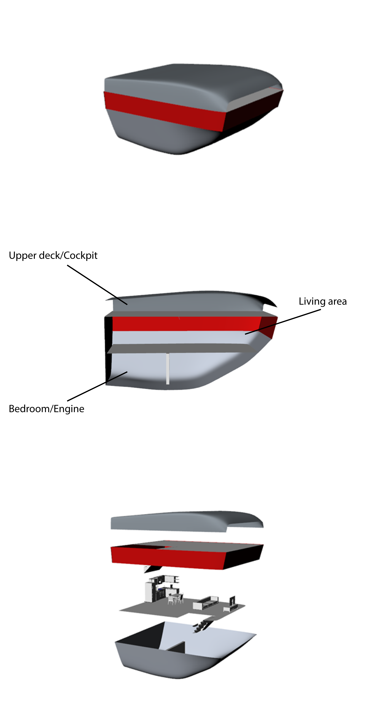

Sumiyoshi Sanjin
Problem
Current issues in Sydney's age distrition are housing affordability and accessibility which are forcing young adults to invest into expensive new housing in suburbs which are more than 40km away from the CBD. Resulting in hour long commutes to work or missed opportunities to work in a certain area, as well as a population distribution thats depicted by housing prices. As can be seen in the image below, large numbers of age 25 to 40 live in the suburbs farther away from many of the jobs in the CBD and North Sydney.

Solution
The Design


In order to combat these issues, we have designed a comprehensive water network that will incorporate boat houses that are able to be transported to any area in Greater Sydney at any time. A large waterfront building will be erected at CBDs such as Barangaroo, Parramatta, Homebush, Chatswood and more, effectively connecting these areas via water. This would lead to